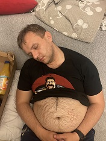

Moja pierwsza strona internetowa poświęcona mojemu serdecznemu przyjecialowi GRUBEMU.
Tutaj w przyszłości powstanie dłuższy tekst na temat grubego, co nie watpie bedzie bardzo wymaganym i ciezkim zajeciem
tutaj jako teskt drugi tez cos naszponcimy na grubego, moze sie nie obrazi.